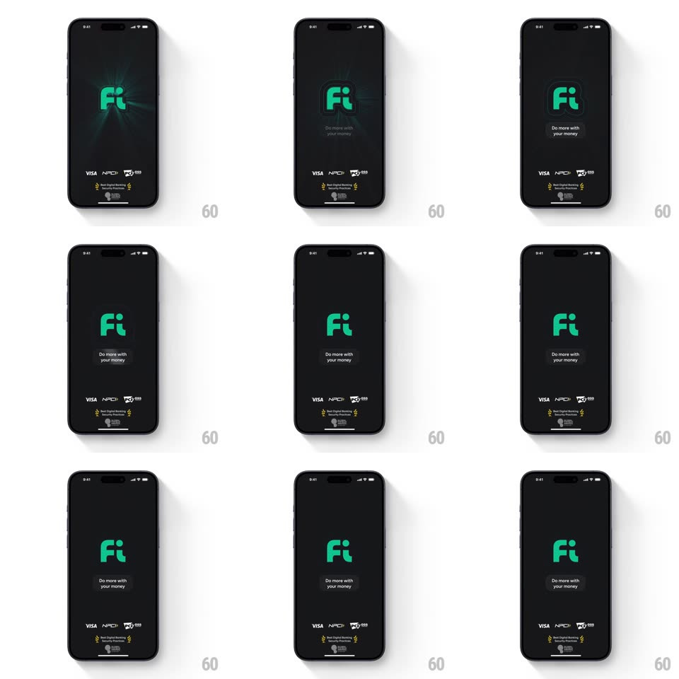

Media
Frame-by-frame

Rebuild this animation 1:1: Fi Money's splash - the green "Fi" logo pulses with soft radial glow rings on the near-black launch screen as the tagline fades in.

Rebuild this animation 1:1: Fi Money's splash - the green "Fi" logo pulses with soft radial glow rings on the near-black launch screen as the tagline fades in. ## Integration Integration: stack-agnostic spec - springs given as stiffness/damping, timed motions as duration + curve; map every value to your framework and animation library of choice. ## Scene Near-black splash: the green "Fi" wordmark centered, a soft green radial glow behind it, "Do more with your money" beneath, and a partner strip (VISA, NPCI, and award badges) pinned at the bottom. ## Motion spec Pattern: rhythmic logo pulse, ~2s loop. - Intro: the logo fades in with the glow (400ms). - Pulse: concentric glow rings expand from behind the logo (scale 1 -> 2.2, 2s, ease-out) while fading (opacity 0.35 -> 0); a new ring starts each second so two overlap. - The logo breathes subtly with the rings (scale 1 -> 1.02, 2s, ease-in-out). - Tagline: fades in (300ms) after the first pulse. - The partner strip is static throughout. ## Calibration - The glow is a halo behind the mark - it never covers the letterforms. - Two rings in flight, evenly phased. ## Reduced motion Static logo and glow; tagline fades in. ## Don't miss - The pulse origin is the logo center, not screen center if they differ. - The bottom strip (VISA / NPCI / badges) is part of the frame, not an afterthought.